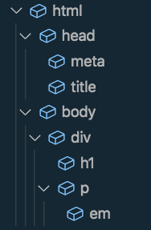
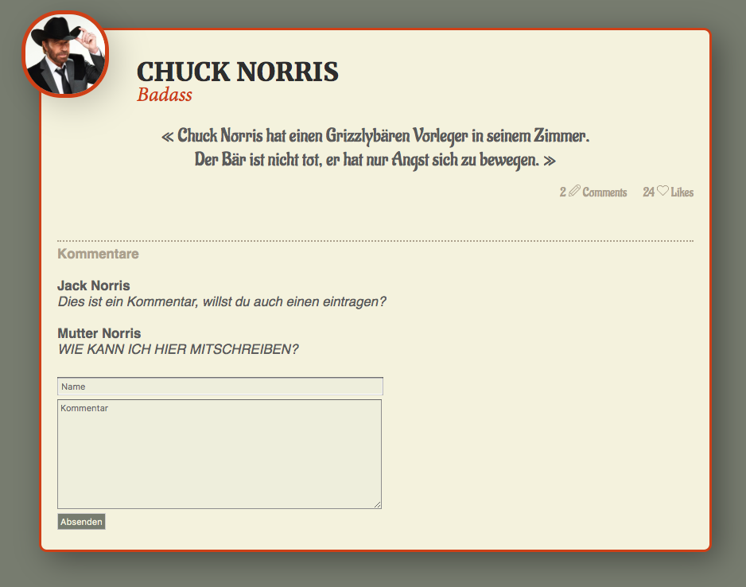
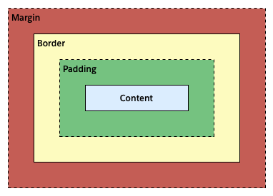

HTML
Syntax
- Elemente mit Inhalt (z.B. Paragraph
<p>)
<tag attribut="wert">Inhalt</tag>
- Element ohne Inhalt (z.B. weicher Umbruch
<br />)
<tag attribut="wert" />
- Kommentar
<!-- Dies ist ein Kommentar -->
Semantik
Syntax ist die Regel, wie wir HTML-Code schreiben. Semantik ist das Ziel, dass der Code für Menschen möglichst verständlich ist. Z.B. statt <div id="xy">, besser: <header>
Grundgerüst
- Doctype: Welche HTML-Version früher kompliziert; heute nur noch:
<!DOCTYPE html>(immer auf Zeile 1) - Der Rest:
<html>
<head><!-- Hier Metadaten --></head>
<body><!-- Hier Inhalt der Webseite --></body>
</html>
Weitere Themen, die wir angesprochen haben:
- Tipps&Tricks in Visual Studio Code (Editor)
- Inline- vs. Block-Elemente
- IDs, Class und Style Attribute
Verschachteln
- HTML Elemente können beliebig tief verschachtelt werden:
<div>
<h1>Headline</h1>
<p>Ein bisschen Text und hier noch etwas <em>kursives</em>.</p>
</div>
Block und Inline Elemente (Refresh)
- die meisten Elemente sind Block-Elemente und verwenden die gesamte Breite, die sie kriegen können (z.B. div- oder p-Element).
- einige wenige Elemente sind Inline-Elemente (z.B. span- oder img-Elemente), die nur so viel Platz einnehmen, wie sie auch wirklich benötigen und somit horizontal Platz freilassen für andere inline Elemente.
HTML als Baumstruktur
- Ein HTML kann man auch als Baumstruktur betrachten:

Excercise #1
Ziele
- HTML, CSS und JS (inkl. Animation) besser kennen zu lernen.
- Die Grundkenntnisse erarbeiten, um Online Werbemittel erstellen und anpassen zu können.
Endergebnis
;
Schritt 1: HTML Grundgerüst
Ziel
Hilfestellung
Hier eine Starthilfe (zum Kopieren):
<!DOCTYPE html>
<html>
<head>
<meta charset="UTF-8">
<title>Mein Dokumenten-Name</title>
</head>
<body>
<main>
<!-- TODO: Hier die restlichen HTML-Elemente einfügen.
(Hilfe) Auswahl von Tags:
'h1' bis 'h6' -> Überschriften
'p', 'br' -> Absätze und weiche Umbrüche
'ul', 'li' -> Aufzählungen und Listenelemente
'a' -> Hyperlinks
'div', 'span' -> neutrale Elemente (Block und Inline)
'img' -> Bilder/Grafiken
'strong', 'em' -> Auszeichnungen
'form', 'input', 'textarea', 'button'
-> Formular und -elemente
'header', 'footer', 'main', 'article', 'aside', 'nav', 'section'
-> semantische Tags
-->
<form action="#">
<input type="text" placeholder="Name" required>
<textarea cols="30" rows="10" placeholder="Kommentar" required></textarea>
<button>Absenden</button>
</form>
</main>
</body>
</html>
CSS
Einbinden
- Inline
<p style="color: green;">Dieser Text ist grün</p>
- Style-Tag
// im HTML-Dokument, innerhalb des <head>-Elements
<style>
p {
color: green;
}
</style>
- Externes Stylesheet
// im HTML-Dokument, innerhalb des <head>-Elements
<link rel="stylesheet" href="pfad/zum/style.css">
Syntax
- Selektor
{ Eigenschaft: Wert; }
Beispiel:
body {
font-family: Helvetica;
font-size: 12px;
}
- Kommentare werden mit
/* */gemacht und können auch über mehrere Zeilen laufen
Beispiel:
body {
font-family: Helvetica;
/* ich bin ein Kommentar */
}
Selektoren
Die drei meist-verwendeten Selektoren sind: * HTML-Element * Class * ID
Beispiel HMTL-Element:
// HTML
<p>Ich bin ein Paragraph in grüner Schrift</p>
// CSS
p {
color: green;
}
Beispiel Class:
// HTML
<p class="special">Ich bin fett</p>
<p>Ich bin normal</p>
<ul>
<li class="special">Ich bin auch fett</li>
</ul>
// CSS
.special {
font-weight: bold;
}
Beispiel ID:
// HTML
<h1 id="warning">Ich bin wichtig und einzigartig! … und unterstrichen!</h1>
// CSS
#warning {
text-decoration: underline;
}
erweiterte Selektoren
- nebst einfachen Selektoren (HTML-Element, Class, ID), gibt es zahlreiche weitere Möglichkeiten mit Selektoren zu arbeiten. Wir haben die folgenden beiden Möglichkeiten besprochen.
Liste von Selektoren (Komma-getrennt)
p, .class {
// hier einige CSS-Definitionen
}
dies entspricht demselben wie:
p {
// hier einige CSS-Definitionen
}
.class {
// hier nochmal dieselben CSS-Definitionen
}
Man kann also mehrere Selektoren zusammenfassen.
Selektoren mit Kombinatoren: Nachfahrenselektoren (mit Wortabstand getrennt)
div p {
// diese CSS-Definitionen betreffen alle <p>-Elemente, die sich innerhalb eines <div>-Elements befinden
// (muss nicht direkt sein!)
}
Excercise #2
Excercise #3
Excercise #4
Hexadezimale Farbdefinitionen
Habe noch ein gutes Video dazu gefunden: https://www.youtube.com/watch?v=GyXXkVZflnA
Shorthands
Gewisse CSS-Definitionen können verkürzt und auf verschiedene Weisen geschrieben werden:
// ausführlich
border-width: 1px;
border-style: solid;
border-color: #EFEFEF;
// Shorthand
border: 1px solid #EFEFEF;
Box Model
- Abstände werden meist mit margin oder padding geregelt:
margin
Abstand vom Rahmen ( border ) nach Aussen.
padding
Abstand vom Rahmen ( border ) nach Innen.
https://www.w3schools.com/css/css_boxmodel.asp

Absolute Positionierung
- Der Standardwert ist
static: Alle Elemente sind im Dokumentenfluss und verdrängen sich gegenseitig. - Mit
relativebleibt das Element im Dokumentenfluss. Kann jedoch mit den Eigenschaftentop,bottom,leftundrightrelativ zur Ausgangsposition verschoben werden. Der ursprüngliche Platz wird jedoch weiterhin «benützt» und verdrängt andere Elemente, als ob das Element in seiner Ursprungsposition wäre. - Mit
absolutenimmt man das Element komplett aus dem Fluss. Verwendet man dazutop,bottom,leftundright, wird das Element relativ zum Browser platziert. Man kann diese Abhängigkeit ändern, indem man einem Eltern-(!)-Element eine Positionrelativeoderabsolutegibt.
Ebenenreihenfolge
Werden verschiedene Elemente relativ oder absolut positioniert, kann mit der Eigentschaft z-index gesteuert werden, welches Element welches Element überdeckt.
Excercise #5
JavaScript
Einleitung
Die Programmiersprache JavaScript (kurz JS) wird für vieles eingesetzt (Beispiele):
- Interaktivität im Internet
- Animationen
- Formular Validierung
- Interaktive PDFs
- Scripting in InDesign
- Server-seitig
(JavaScript ist nicht zu verwechseln mit Java, eine andere Programmiersprache!)
Syntax
- Ähnlich wie CSS werden JavaScript-Ausdrucke mit einem Semikolon (
;) beendet. - Ebenfalls ähnlich wie CSS, werden Blocks mit geschweiften Klammern (
{...}) zusammengehalten (Diese Klammern werden aber auch für andere Dinge verwendet). - Namen für Variablen, Funktionen und weitere Namen, die man selbst wählen kann, werden in der sogenannten camelCase-Schreibweise geschrieben: Erster Buchstabe wird klein geschrieben; Wenn mehrere Worte zusammengenommen werden, beginnt jedes weitere Wort mit einem Grossbuchstaben. (Beispiele:
meineVariable,autoBauMaschine,htmlToCssConverter). - Kommentare werden wie im CSS entweder mit
//(Zeilenkommentar) oder/* */(Blockkommentar) geschrieben.
Konsole
Die meisten Webbrowser kommen mit einer JavaScript-Konsole, die erlauben es schnelle Fehler zu finden (sog. Debugging) und mithilfe von JavaScript direkt mit der Webseite zu interagieren.
Im Google Chrome kann die Konsole aufgerufen werden, indem man einen Rechtsklick auf eine Webseite macht, dabei den Menüpunkt «Untersuchen» wählt und anschliessend im nun offnen Bereich (sog. DevTools -> Developer Tools -> Werkzeuge für Entwickler) auf das Tab Console wechselt.
Darin kann direkt JavaScript geschrieben werden und man erhält nach jedem Enter sogleich ein Feedback, falls man der Konsole auch was zu tun gegeben hat. Z.B. 3 + 5; gibt die Antwort 8;
Eine gute Alternative, um mit der JavaScript und der Konsole Dinge zu testen, empfehle ich die REPL-Seite -> «HTML, CSS, JS».
Erste Konzepte
Zahlen
Zahlen können einfach in JavaScript-Dokumente oder die Konsole geschrieben werden:
5 + 10;6 * 8;12 - 14;8 / 4;
In der Informatik unterscheidet man oft zwischen
- «Integer» (kurz Int; DE: Ganzzahlen; …, -2, -1, 0, 1, 2, …)
- «Floating Point Numbers» (kurz Float; DE: Fliesskommazahlen; z.B: -2.5, 3.333333334, 10.5)
String / Text
Text kann nicht einfach so in JavaScript verwendet werden. Tippt man z.B. Dies ist ein Text in die Konsole, erhält man einen Fehler.
Um mit Text zu arbeiten, werden diese in Anführungszeichen gesetzt (" oder ') und diese werden technisch String genannt:
"Hallo, mich nennt man einen String";'Du darfst mich auch mit den einfachen Anführungszeichen schreiben';
Strings kann man mit einem Plus (+) zusammensetzen:
- Aus
"Hallo" + "zusammen!"wird:"Hallozusammen!"
(Wortabstände werden nicht automatisch hinzugefügt, wie auch? JavaScript kann leider noch keine Gedanken lesen)
Variablen
Variablen sind ein sehr wichtiges Konzept in der Programmierung. Variablen sind Objekte, in denen Informationen gespeichert werden können, z.B. Zahlen, Texte oder sogar andere Objekte.
Um eine Variable zu erstellen, verwendet man das Schlüsselwort var wie folgt:
var meineVariable;
Nun existiert die Variable meineVariable. Sie ist noch leer bzw. undefiniert.
Daten an Variablen binden / Informationen speichern
Hierzu verwenden wir das Gleichheitszeichen (=). Es wird von Rechts-nach-Links gelesen: Der Teil rechts vom = wird in die Variable links gespeichert:
meineVariable = 2;
Nun beinhält meineVariable den Wert 2.
Man kann die Erstellung und das Speichern auch im selben Zug machen:
var meineVariable = 2;
hat dasselbe Ergebnis wie
var meineVariable;
meineVariable = 2;
Da die Variable nun eine Zahl enthält, kann z.B. damit gerechnet werden:
4 * meineVariable; // ergibt 8
Was ist so toll an Variablen?
- Wiederverwendenung: Ich muss z.B. an mehreren Orten die MWST ausrechnen. Wieso nicht einmal als Variable
var mwstspeichern? Wird der Prozentsatz irgendwann angepasst, muss ich die Zahl nur einmal anpassen. - Aussagekräftig: Was ist einfach zu lesen und verstehen,
breiteDesLogooder300?
Variablen helfen uns enorm, den technischen Code mit Wörtern und Wörterketten lesbarer zu machen. Stellt euch den perfekten Code als Koch-Rezept vor, dass sowohl ihr als auch der Computer versteht.
Es ist üblich, den Code und somit die Namen von Variablen und Funktionen in englischer Sprache zu halten.
Weiteres
- Variablen können überschrieben werden:
meineVariable = "Drei"; - Nach
4 * meineVariable;istmeineVarialbenicht das 4-fache. Soll das Ergebnis der Rechnung abgespeichert werden, benötigen wir dazu wieder das Gleichheitszeichen:meineVariable = 4 * meineVariable;. Nun wurdemeineVariablevervierfacht und mit dem Ergebnis überschrieben.
Boolean
Unter dem Begriff Boolean versteht man einen Wert, der entweder Wahr oder Falsch ist. In JavaScript heissen die true (Wahr) und false (Falsch). Das wird verwendet, um logische Entscheidungen zu treffen.
true und false kommen zum Zuge, wenn z.B. zwei Werte verglichen werden:
3 < 4; // true
"TextA" == "TextB"; // false
"Drei" == 3; // false
Wichtig: Um zwei Werte nach Gleicheit zu vergleichen, müssen 2 Gleichheitszeichen (==) verwendet werden. Denn das einfache Gleichheitszeichen wird ja bereits schon verwendet, für das Binden von Variablen.
Noch besser: Verwende sogar 3 Gleichheitszeichen (===) für Vergleiche. Das ist noch einweniger Zuverlässiger:
"3" == 3; // true
"3" === 3; // false
Dies wegen der sog. «JavaScript Type Coercion», auf die hier nicht weiter eingegangen wird.
Funktionen
Funktionen helfen uns, den Überblick zu behalten (Gruppieren von Code) und nichts doppelt zu schreiben (Wiederverwendung von bestehendem Code).
Eine Funktion wird meist erst definiert und anschliessend ein- oder mehrmals ausgeführt:
Definieren
Definiere eine Funktion mit dem Schlüsselwort function:
function meineFunktion() {
// Inhalt der Funktion
}
Aufrufen
Um eine Funktion auszuführen, wird der Funktionsname mit runden Klammern verwendet:
meineFunktion();
Bei der Definition passiert noch nichts, ausser dass sich der Computer die Funktion unter dem gegebenen Funktionsnamen merkt. Erst wenn die Funktion aufgeruft wird, beginnt der Computer damit, den Inhalt der Funktion auszuführen.
Visual Studio Code
Plugins
Wir haben folgene Plugins installiert, um beim Arbeiten Zeit zu sparen.
- Live Server – https://marketplace.visualstudio.com/items?itemName=ritwickdey.LiveServer
- Formatter – https://marketplace.visualstudio.com/items?itemName=HookyQR.beautify
Einfach melden, wenn ihr Fragen oder Probleme mit den Plugins habt.
Nützliche Shortcuts
Kommentar ein-/ausschalten (aktive Zeile(n))
SHIFT + CMD + 7
Dokument formattieren
SHIFT + ALT + F
aktive Stelle formattieren
CMD + K, dann CMD + F